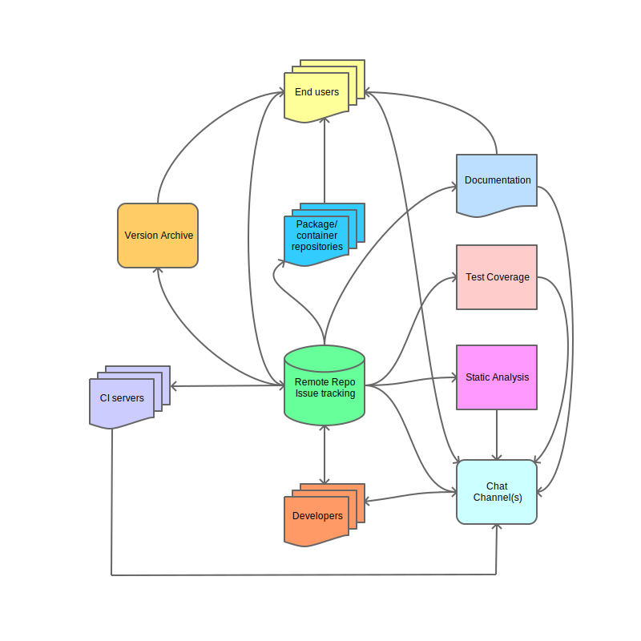

The anatomy of a successful research software project¶
Motivations¶
If you publish research that requires you to write a significant amount of code to produce results, then you probably (hopefully) put the code into source control in a public repository. Many journals now require, or at the very least, encourage this practice. But if you think this alone is enough to make your results reproducible by your peers, then think again.
Why is this? Here's a few possible reasons another researcher might not be able to first replicate your results and then go on to use your software to extend the research:
- it isn't clear how you run/use the code
- the code isn't packaged and thus difficult to install correctly, if at all
- the code doesn't work on their machine
- the code runs, but the results are different
- the code works - the results are the same - but it's not at all clear how you would go about using the package to advance or modify the published work
Even if a researcher successfully replicates your results, uses, and then and cites your software (somehow), subsequent readers of their research will likely confront the same problems.
Often, documentation and testing are overlooked or given a low priority because they "slow you down". To this, I say more haste less speed. You'll save more time in future development than you'll lose by producing some documentation and a test framework. Whilst all developers test their code as they write it, not all developers keep those tests and run them regularly. How many times have you changed some code that's had unintended consequences in another part of your software, creating a bug that's gone unnoticed because you didn't keep the original tests, and now you have no idea exactly what is broken or quite why it no longer works?
It is also important that your software is open to scrutiny by others. This essentially exposes your methodology at a level of detail generally impractical to describe fully in a paper. If there are any flaws in your methodology, or even bugs, then they are open for peer review. Conversely, aspects of your implementation may be of benefit to other researchers, even if the overall package isn't as relevant to them.
All of the potential problems listed above can be solved to a lesser or greater extent using free and open tools that integrate into your project. Where I mention a specific product, it's not necessarily a recommendation, it just happens to be the tool I tend to use. And in most cases other (and perhaps better) products are available. Here's how it all fits together:

One you integrate these tools into your ecosystem, and once set up require little or no maintenance. They'll save you enormous amounts of time and effort by providing forewarning of any issues, as well as providing a framework enabling developers to collaborate effectively, and users to feed back into the project by reporting bugs or suggesting improvements.
Some, or perhaps all, of what follows may be obvious to some readers and it's largely common sense, but I'm describing the methodology from the ground up for completeness, and for those who are new to the concept of providing software research tools to a wide audience.
Developer(s)¶
Even if you work on your own, entertain the possibility that someone, somewhere, may one day want to collaborate on the project. Consider also that there may be long periods where you're not actively developing the software, during which you'll likely forget some of the detail of how it works, what the dependencies are, or how you test it's working correctly.
This means documentation, even if it's just some brief notes for yourself. But you may as well write it for a wider audience. I've seen plenty of projects on github that I would've like to contribute to, but didn't as there weren't clear instructions on basic usage or instructions on to how to set up a development environment, and a well-documented test framework. If you want collaborators, you're more likely to get them if they are comfortable they can add value without breaking anything.
The obvious place to put this documentation is in the repo itself, starting with README.md. Github (for example) renders markdown into nicely (if somewhat spartanly) formatted web pages, is simple to master, and is well worth getting up to speed in if you haven't already: see e.g. markdown cheatsheet.
Source control¶
In the corporate world, teams of developers work very closely together, and often exclusively on a single project, and in this context it often makes sense for them to all work directly in the same repo - when things go wrong they are quickly apparent and quickly resolved. In academia, however, the situation is very different: collaborations are much looser and people will be dipping in an out of various projects. Your collaborators may be people you barely know, geographically separated, and (most crucially) not reporting to the same boss as you! The best model for this situation is the "fork and pull request" practice.
In other words, you control the "root" repo for the project, and only you (or a select few) have permission to commit to this repository. If somebody else wants to collaborate, they "fork" your repo, essentially taking a copy of it, do their development in their repo, and when ready they submit a "pull request" (PR) which invites you to review their changes and decide if you want to merge their contribution into your repo. Github also has tools in place to ensure their changes don't break anything (see Testing).
This practice can also be used within a single repo, with people developing on branches and submitting PRs merging to the master branch. A note here about good practice - it's generally not a good idea to commit directly to master, which should be the golden copy of your code. Development should be carried out on branches and merged to master when complete and fully tested. In practice, when I'm the only developer on a project I tend to commit small and uncontroversial "atomic" changes directly to master, but always use branches for larger and/or potentially breaking changes. Once a branch has been merged to master, it is no longer required and should be deleted.
Issues and project management¶
Github has the facility to create "issues" against a repo which are very useful for reporting bugs and tracking development. Issues can be categorised, assigned to people, assigned a status, assigned to a particular release, and discussed and commented on. Whilst the functionality is reasonably basic compared to other (often paid for) products, it has the advantage of being completely integrated into the project, and there are tools available to enhance the functionality, such as Zenhub, which adds full Agile project management via a browser plugin. For academic projects with a relatively small number of collaborators, this is probably more than sufficient.
Commit messages can be automatically linked to specific issues simply by referencing the issue number prefixed with a '#', which is useful for tracking work done on a particular issue. Additionally, you can automatically close issues via a commit that addresses the issue, by including text like "fixes #47" or "closes #47" in the body.
Looking at the issues boards of other repos is a good (rough) guide to see how robust the software is, how many issues are reported by users (a lot could indicate either wide usage or buggy software, or both!) and how responsive the developers are at addressing them.
Testing¶
It goes without saying that you should test your code, have a test harness of some form, and append the test code for any new features to the test suite. And obviously you always run the tests before pushing to the github repo, and when you do your CI (see next section) runs more comprehensive tests. This section is more concerned more about how you go about automating this process, how to test in a wider range of environments, and how to determine if your tests are giving you a good indication of how robust your software is.
Continuous integration¶
Simply put, you register with a continuous integration (CI) provider (e.g. travis, appveyor, circleci) and point them to your github project and specify some configuration for each provider so they know how to build and test your project. Then, every time you commit, the CI will build and test your code for you and tell you if there's a problem. The first thing this does is give you an assurance that your repo is complete and self-contained - if you've forgotten to commit a file, or if there's a dependency you haven't explicitly specified but happens to be installed on your machine, you'll know pretty soon.
Ok, so you've been convinced that regression tests are a good thing (if you weren't already), and you're developing a python project on your linux machine, which has python 3.7 on it, and your tests are fairly comprehensive to you're confident it works... but only on linux, and only with python 3.7. This is where CI comes in - you can configure it to build on multiple platforms and multiple software versions.
Different CI providers support different platforms so you may well need to register with multiple providers to cover the major platforms, e.g. Windows, OSX and linux. In terms of software versions aim for 3 - e.g. for R, they recommend testing against the previous release, the current release, and the release in development.
Obviously if you do find a problem with a specific platform/version, you may then need to get hold of a machine with that configuration to track down the problem, but often a painstaking trawl through the CI log files is enough to pinpoint the problem.
Writing configuration files for CI providers (typically in yaml) is something of a dark art. There are plenty of examples to be found on github and elsewhere though.
Test coverage¶
As software evolves, the usage patterns change and the code gets changed or added to but often the tests don't. Thus its easy to stumble into a situation where the code that's being tested is not a good representation of the code that's executed by users. Again there are online tools that integrate with your repo and report area of your codebase that aren't being adequately tested.
Static analysis¶
No amount of runtime testing can guarantee to weed out all code errors, so it's important to analyse your code for dubious constructs that cause subtle bugs. This is commonly known as static analysis, since its done without actually running the code. For compiled code, this is doubly important, as there could be undefined behaviour lurking in the code which may (by pure luck) appear to work 99% of the time but cause the application to error or even crash seemingly randomly, for example by accidentally reading over the end of an array. As with CI, online tools are available that can be integrated with the github repository and will automatically analyse each commit and report any issues. They also typically grade your code for quality, which you can advertise on your repo: a high grade will again encourage people to trust (and therefore use) your package, and may also help attract contributors.
Codacy is one such provider, and it combines static analysis tools for a variety of languages, sometimes with multiple tools for one language. Often static analysis tools will seem overly pedantic and seem to report a lot of false positives, but sometimes they are highlighting a subtle issue that requires some thought to understand. Otherwise, spurious and overly pedantic issues can be suppressed.
Versioning and releases¶
So far all we've done is lay some foundations for good software development but havent really got to grips with the problems outlined at the start. Now we can start getting to the point of this methodology.
Journal articles generally have a pretty slow turnaround. If you submit a manuscript containing a reference to some software in a github repository, then it will be at least 3 months and possibly a lot longer before that article is published. In the meantime, unless you've completely stopped development, the software in your repo could have changed substantially, and may not even be able to produce the results you described in the article, so it will be very difficult for any other researcher to replicate your results, short of bisecting the revision history, hoping for some informative commit comments, and guessing the approximate date you ran the code that generated the results you published. A time-consuming and potentially fruitless process for anyone.
There is a simple solution, you simply version your software, and refer to a specific version in any published work. git has a concept called a tag, which just identifies a specific commit in a repo with a convenient name. In turn you can use this tag to create a release on github, which creates a zipped copy of the code at the tag, and allows you to create some release notes. Examining commit comments and closed issues since the previous release is a good starting point for making release notes.
There are a number of different standards for versioning software, perhaps the most common is semantic versioning (aka semver) which is described here.
So if you quoted your package and a version in your article, you've gone a long way to making your work reproducible by others. But there are easier and less error-prone ways of installing software than downloading a zip file, extracting it and manually copying it to a particular location. If you want to upgrade or remove it then will you remember exactly what you did to "install" it in the first place?
Documentation¶
I've already mentioned the README, and this is a great place to introduce your package and put some brief notes on installation and basic usage. But its important also to provide more detailed examples and, ideally, API documentation. Depending on the size/complexity of your package you might be able to put this all in README.md but it probably makes sense to split it over multiple markdown files. Github markdown rendering is fairly spartan and has limited support for things like tables of contents and equations, if your documentation requires them. If you want very professional-looking documentation it is worth looking into rendering packages that convert markdown to styled html, such as Sphinx or MkDocs, which give you things like themes, a search tool, and tables of contents etc, straight out of the box.
The generated documentation can be hosted (free) on github as project pages, or externally on sites such as readthedocs. I personally use mkdocs (in fact this site uses it), which is relatively easy to get up and running, supports configurable themes and supports thing like embedding (\latex) (for equations) and (python) macros to programmatically generate content.
Examples¶
Providing worked examples is arguably the most important part of the documentation as its likely to be the first port of call for new users.
The documentation macro feature (in e.g. mkdocs) is particularly useful for examples, as you can pull in the actual code (rather than having to remember to manually copy/paste the example code in the documentation every time it changes). You can even go as far as actually running example code, inserting the output into the documentation as its generated. This has the added bonus of ensuring your example code works with the current version of the package. You are effectively testing your documentation, a process known as doctest. Some languages (e.g R, rust) support this natively.
API documentation¶
Once users are actively integrating your package into their work, they will likely want more detail on how to use specific classes or functions. This is where API documentation comes in. You want to automate this as much as you can so it reflects the current API and manually generating it and keeping it up-to-date is a manual, laborious (and thus error-prone) process. Some documentation packages, or plugins for the packages, purport to be able to automatically generate documentation from your package, but you will probably find that your mileage may vary. In the worst case you can write a script to translate the raw package documentation (docstrings in python) into markdown. Not ideal, but still better than a purely manual process.
Package repositories¶
If you want users to be able to install your software easily, which translates pretty much to "if you want users", then you're going to need to package your software and upload it to a public repository. How straightforward this process is depends very much on the repository. In my experience, python package index (PyPI) is the easiest and CRAN (the R repository) the most onerous. PyPI seemingly accepts pretty much anything (including broken packages), whereas CRAN is extremely strict about the package contents and documentation. In between you have things like conda-forge, which will test the package installs on a number of different platforms before it accepts it. Obviously it's imperative that you ensure that you have fully tested the version you are publishing.
Container repositories¶
An alternative way of delivering software is to provide it in the form of a container, a.k.a. a docker image. This is in essence a lightweight but full (linux) operating system image pre-installed with your software and all its dependencies. This can be extremely useful if your package has a web API, i.e. an "app service" and allows it to be easily and quickly deployed almost anywhere. It is also useful for providing an environment containing ready-to-run examples that aren't part of the installed package. You provide a recipe in the form of a Dockerfile which is essentially a sequence of commands on how to install - from a base OS - all your package's dependencies, build it, set up an environment, and then run it.
Another advantage is if you your software requires large datasets from various sources, you can provide a pre-packaged docker volume containing all the data (as long as its publicly available and you have got any necessary permissions to replicate it, of course).
Docker hub is one such repository, which (as always) integrates with github and can be configured to automatically generate images for you, including tags (and thus releases).
Citations¶
Citations nowadays include a unique Document Origin Identifier (DOI), and this by no means applies only to academic papers. It's also used for both software and data. Thus, assigning a DOI to a specific release of your software constitutes a reference which anyone should be able to trace.
What happens if you publish a paper referencing your software, including a version, and then subsequently move the repo elsewhere or even delete it, or pull the release from public repositories? This will leave readers of your article unable to find your work. The beauty of a DOI (and the provider thereof) is that it doesn't matter (so much). Zenodo is a service that (you guessed it) integrates with github and takes a complete snapshot copy of your software, and thus persists even if the original repo or package no longer exists.
I would suggest you make it as easy as possible for people to cite you, providing a bibtex-style reference and/or a link to Zenodo (or similar) in your documentation can help. After all, it's people (including yourself, see below) citing your software that makes it maintaining it worthwhile.
Licencing¶
Another aspect of acknowledgement your work is others using your source code, as opposed to your software. This is where licencing comes in.
It is important you understand your rights as a a developer of open-source software, and also the rights of users of your software. By licencing your package you protect yourself from public liability and also (typically) legally require anyone to acknowledge you if they base their own software on yours. Most open source licences are quite permissive, even to the point where a third party is allowed to sell your software, as long as your were acknowledged.
Github, for example, provides a number of licence templates you can select from, select the one which best suits your situation.
Communication¶
For promotion¶
Users and practitioners need to be aware that your software exists. A simple and relatively easy way of promoting it is to publish an article in, for example, the Journal of Open Source Software or the Journal of Open Research Software, neither of which require a full paper, just simply a brief summary of what the package does. Their review process focussed on the software and if you've followed the recommendations here you should have little trouble being accepted. The impact, however, may not be great (who trawls there journals in the hope a package they could use suddenly appears?), so if you can also cite it yourself in an applied paper this will help greatly. Likewise, conferences are a good place to plug your development work, as well as simply encouraging collaborators and colleagues to use (and then cite) it.
For development¶
After configuring the tools in your ecosystem to listen for changes in repo, and respond automatically to them, they will typically email you if there's a problem. These days this isn't so reliable as most people are bombarded by emails and read few of them. Perhaps a better way is to use a messaging service (such as slack, as always others are available). Slack can be used as a central point for any issues coming from the services around your package, and of course can also be a place where developers communicate. Slack has many custom integrations which you can add to your channel, such as being able to create and amend github issues directly, and where custom integrations are not available you cant fairly easily create your own via webhooks.
The slack channel(s) can also be a good place for communication with end users, which brings me on to...
Support¶
It's difficult to know how many people actively use your package (short of incorporating spyware into it). Whilst package repositories will produce a count (or rate) of downloads, I suspect at least some are bots, and of the others, downloading is one thing but actually using is another. But lets assume you have active users, and you have good documentation.
You may find that a lot of the support questions could be answered by simply reading the documentation (who's not guilty of this?), or are not specific enough for you to replicate the problem they report. Some form of triage is useful if you get a lot of support questions. You can use an "issue template" where users must complete certain questions, describing in detail what they were trying to do, what went wrong, and on which version and platform. This deters people who realise they should look again at the documentation, and stops people raising vague issues along the lines of "I tried using X but it didn't work", that simply don't contain enough information to replicate. At the very least, you should make it clear that you cannot/will not help anyone unless they can come up with a reproducible example. After all, how do you fix a bug if you can't actually replicate the bug?
Takeaways¶
This may seem like an awful lot of effort to go to, but it does save potentially a lot of future headaches, and it doesn't need to all be done at once. Start with CI, and add other services/features as and when they become useful. Good practice in software- and data-driven research is becoming ever more important and is being taken more and more seriously by more traditional academics. The growth of Research Software Engineering as a discipline in it's own right speaks to this.
If I had to summarise what I've written into some very brief key lessons, they would be:
- if you want other people to use and cite your software, you have do do a lot more than just writing the software, but there is payback
- all the tools you need are there, you just need to figure out how to use them (if you don't know already)
- automate the sh!t out of everything you can. It will be less error prone and save you (potentially lots of) time going forward. Scripts are your friend
- anticipate failure, test everything. The sooner you know something is broken, the better
Room for improvement¶
In what I've described, the developer has the ability to release directly from their own development environment to public package repositories. This is error-prone and open to abuse. I could accidentally (or deliberately) create a public release of my package that's not in source control and thus circumvent all the good work around testing and versioning. A better approach would be to release via continuous deployment (CD), a logical extension of CI. In the commercial world there's typically a clear segregation of roles (dev, infrastructure, production/users) but in academia you are often all 3 of them. Implementing CD would at least eliminate accidents, another approach would be for package repositories to only accept releases from verified sources, e.g. releases created on github.
In practice¶
To see (most of) this in action "in the wild", take a look around the neworder project.